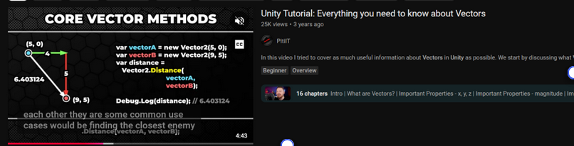
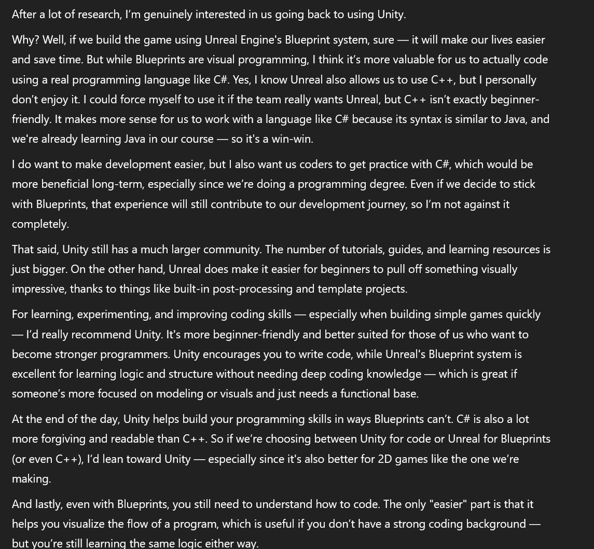
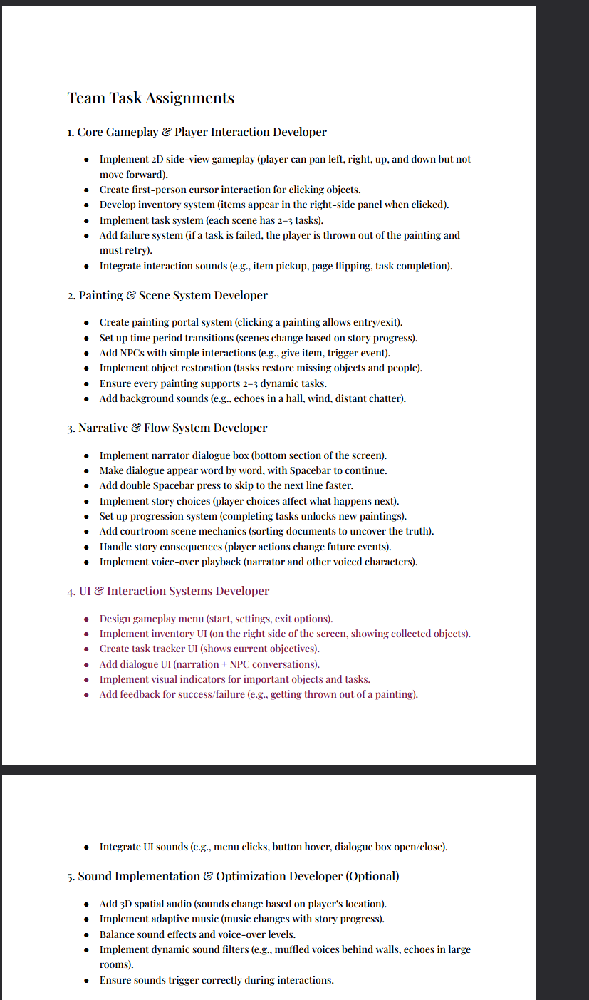

Weeks 1-4

Week 1
Difficulties
I encountered numerous challenges while attempting to install Unity on my laptop. My goal was to familiarize myself with the software within the first week, but the installation process proved to be frustrating and stressful. Despite multiple attempts—including restarting my laptop, uninstalling and reinstalling Unity, and following ChatGPT’s troubleshooting advice—the issue persisted. Ultimately, I am not even sure how I resolved it, but somehow, I managed to get it working..
During this time, I was installing Unity alongside a teammate who successfully downloaded it without any issues. However, while her installation proceeded smoothly, mine was plagued with persistent errors in the Unity Editor.
On January 29, 2025, I reached out for assistance in the Discord server, where both my instructor and fellow students tried to help me troubleshoot the problem. Despite their efforts, I was only able to fully set up Unity by February 5. The main issue turned out to be VPN restrictions that were blocking the installation, along with a critical pop-up that appeared for only 10 seconds, requiring immediate action. Once I addressed these obstacles, I was finally able to complete the setup.
Week 2
Our team held its first meeting on the 4th in the library, where we discussed the foundational ideas for our game. Each team member shared their concepts, including one proposal for a psychological narrative-driven game where players progressively unlock more of the story and shape their own world based on their choices. Since not everyone was familiar with one another, we took the time to introduce ourselves and discuss our individual skills and preferred roles within the project. However, I personally struggled with deciding on a game concept. Creativity has always been a challenge for me—I either find it difficult to generate ideas or become overwhelmed with too many, making it hard to settle on a single direction.
Ultimately, I decided on an RPG-style game where the protagonist is thrown into a world of nothingness. The game symbolizes an individual’s struggle with their own mind. The monsters encountered represent psychological torment, and the player must navigate through multiple maps in an attempt to improve. However, just when they believe they have overcome their struggles, they are cast into darkness once again—symbolizing the harsh reality that, no matter how hard one tries, success is not always guaranteed. I am particularly drawn to psychological games that evoke deep emotions, challenge the player’s perception, and leave them reflecting on their choices. I want to create an experience that makes players think, regret, and feel—one that stays with them long after they finish playing.
Second Meeting-February 5th of February
During our second meeting on February 5th, we had an in-depth discussion about the type of game we wanted to create. We brainstormed and refined our ideas, focusing on narrative structure and core themes. Our initial concept centered around a main character (MC) whose story unfolds through multiple scenes, each revealing a different perspective. A key element of the narrative is the narrator, who controls the truth and influences how the story is perceived.
Technical Troubleshooting and Game Inspiration
Fixing Unity Installation
On Wednesday, I was finally able to resolve the Unity installation issue. The problem stemmed from pop-up prompts that appeared during the installation process, requiring me to select "Yes" or "No" within a 10-second window. Since I had previously missed these prompts, the installation would fail each time. My instructor identified this issue and advised me to keep my eyes on the screen at all times. Following his guidance, we successfully installed Unity, allowing me to begin the Flappy Bird tutorial, which had been recommended by our teacher.
Challenges with Learning Unity
One of my biggest challenges was focusing on a single tutorial at a time. I wanted to explore multiple approaches and gain a broad understanding of different game mechanics and methods. This led to difficulty in choosing which tutorial to follow, as I often found myself switching between resources. To address this, I decided to follow a tutorial while simultaneously researching solutions independently, using the Unity Documentation and other sources.
Despite my efforts, I encountered several conceptual challenges, particularly in understanding:
Vectors (Vector2 vs. Vector3)
Transforms and object positioning
nput handling methods
Through research, I discovered that Vector2 represents x and y coordinates, while Vector3 incorporates x, y, and z. Additionally, I learned that Input.GetAxis provides smoother movement than Input.GetKey since it allows players to use both WASD and arrow keys while offering gradual acceleration and deceleration.
Friday Meeting – Act 2 Planning
On Friday, we held another team meeting, this time at the Kenny Business Center, to refine our plans for Act 2 of the game. Since we had not yet finalized its structure, we discussed potential gameplay elements and made several adjustments. Act 2 is centered around the library, where the main character works as an assistant to the head librarian. The MC interacts with both a scribe and a librarian, engaging in random conversations that gradually reveal key story details. The core gameplay involves completing two to three tasks, including: Sorting books by initials Checking in books Uncovering a hidden book, which their past self seemingly knew about We brainstormed additional task ideas, with suggestions including repairing broken glass and other interactive puzzles. While we did not finalize all elements of Act 2, the discussion helped us m
Week 3
On Monday (5-6 PM), our team met to discuss our project in greater detail. After careful consideration, we decided to switch from Unity to Unreal Engine due to its superior graphics, built-in features, and Blueprint system, which allows beginners to create complex games without coding. Initially, I was hesitant about switching, as I had become more comfortable with Unity. However, after watching more tutorials, I became intrigued by Unreal Engine’s capabilities and wanted to explore it further. I recognize that learning Unreal will take longer, as I plan to understand Blueprints first before transitioning to C++. I believe this approach will help me grasp gameplay mechanics more thoroughly. Additionally, Unreal allows for a hybrid workflow, integrating both Blueprints and C++, which is highly beneficial. During the meeting, we also discussed suitable meeting times. The team leader suggested that everyone should at least complete a 2D tutorial in Unreal by Wednesday to get familiar with the engine. Monday and Friday meetings were made mandatory, with a proposed Monday 9 AM lab session since most of us are available then. We anticipated that fewer people would attend this session, making it an ideal time for focused work. Our Friday meetings were scheduled for 12-1 PM. Another key discussion point was assigning roles within the team. One member broke down the gameplay mechanics, and I took notes to ensure I fully understood our project’s direction. Although my primary role is coding, I believe understanding the overall game design will help me develop better solutions for potential challenges. I always make it a priority to attend team meetings, as taking my own notes significantly enhances my comprehension. I planned to install Unreal Engine and go through several tutorials to familiarize myself with the software. I decided to follow Cobra code 2D tutorial.Where I followed along with the different nodes related to movement and more.
Challenges with Installing Unreal Engine
Installing Unreal proved to be a significant challenge. The download remained stuck at the same percentage for extended periods. I tried to be patient, waiting two hours in hopes that it would at least reach the halfway mark. However, after four hours, it was still at 4%. In an attempt to speed up the process, I searched for other available laptops in the library, but downloading Unreal required administrative access, which I didn’t have. By 7 PM, I decided to leave it running and head home. The installation finally completed between 9 PM and 4 AM. Frustrated with the delay, I chose to study Unreal Engine concepts and game mechanics while waiting. Once the installation was complete, I immediately began watching tutorials. My main challenge was choosing the right tutorial—I ultimately selected Cobra Code’s 2D Unreal tutorial, as he is also an Unreal Engine instructor on Udemy. However, I decided against purchasing the full course, as it primarily focused on Blueprints rather than C++ integration, which is crucial for our project. Additionally, since I am only using Unreal for this semester, I didn’t find it worthwhile to invest in a course that wasn’t discounted
Learning Unreal and Balancing Priorities
wrong. Another challenge I encountered was that, despite following the tutorial, I could not get the character to move, regardless of how many times I attempted to implement it. I rewatched the tutorial to identify my mistake. When I sought guidance from the instructor, he advised me to review the videos again, explaining that I had been deviating from the intended approach by trying to implement my own methods—which ultimately proved counterproductive. Consequently, I revisited the tutorial to pinpoint where I went wrong. Balancing Unreal with midterm studies is proving to be a challenge. My primary focus right now is understanding Unreal Engine, but I recognize that I cannot make it my sole priority. I hope to find a way to effectively manage both my coursework and game development responsibilities in the coming weeks. Unfortunately, I did not make significant progress because I was focused on resolving several issues. I plan to compensate for the lost time by dedicating more effort to game development this weekend and throughout the coming week. In the meantime, I have shifted my focus to an alternative Cobra tutorial that utilizes Unreal Engine 5.0. I was initially hoping to continue with Unity and truly wish we had remained with it.
What i wrote down so far ,from my teams Trello board
Join the Game Project Trello Board 📄 Game Project Document – Design, Research & NotesWeek 4
Asked my team to switch from Unreal to Unity
After a lot of consideration, I decided that doing Unity instead of Unreal had more benefits.
Here,I started understanding C# and following unity tutorials, so my memory of it will come back.I ws contemplating buying a unity course on Udemy, then I realized that it was a waste of money, if I am not going into games development in second year.
Gave roles to coders
On friday I,the head coder Diana gave the different coding roles such as Ui developer, painting scene developer, narration developer and gameplay developer to the coders.I broke down the roles so the coders will understand what they need to do.I used information from my notes in order to make this happen.We talked about the individual roles not in detail just a summary.
